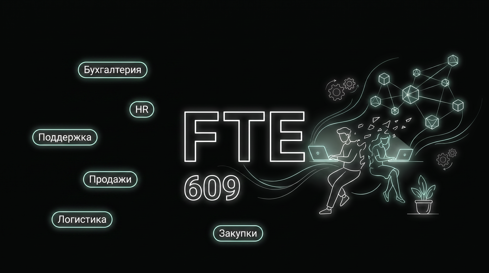
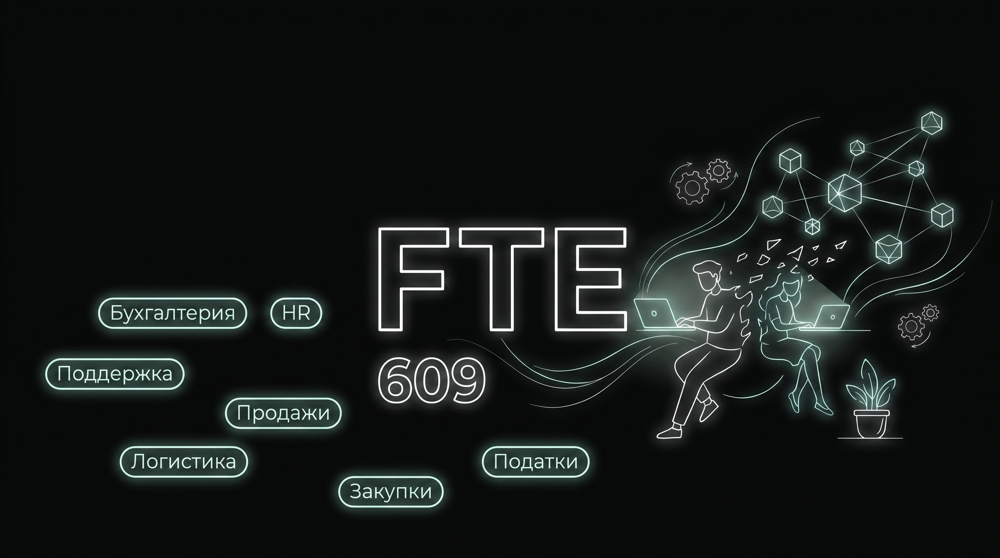
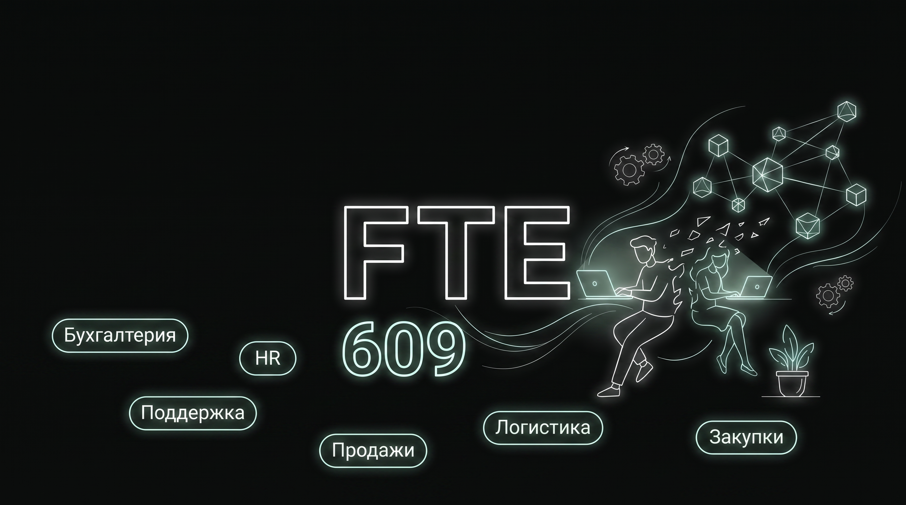
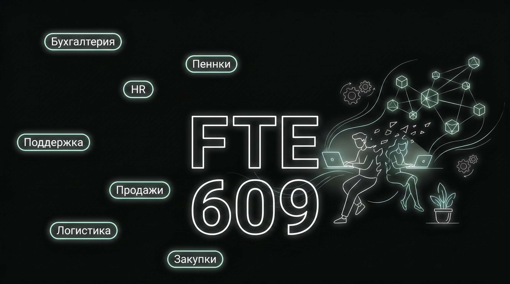
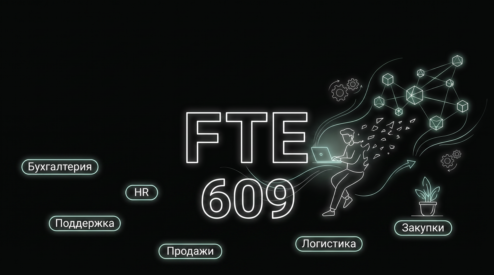
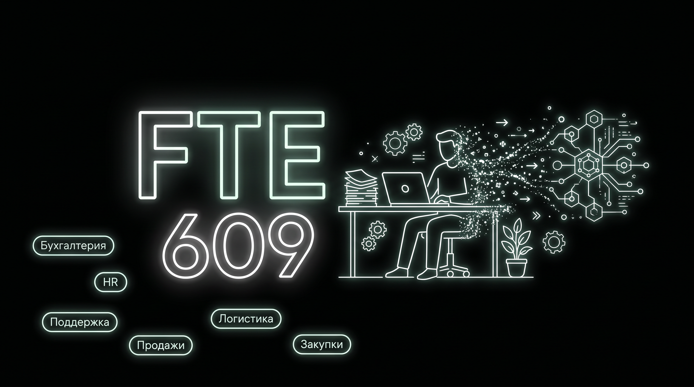
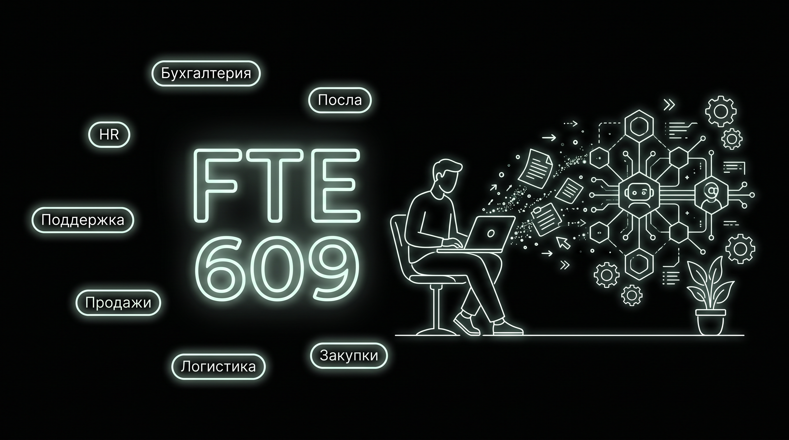
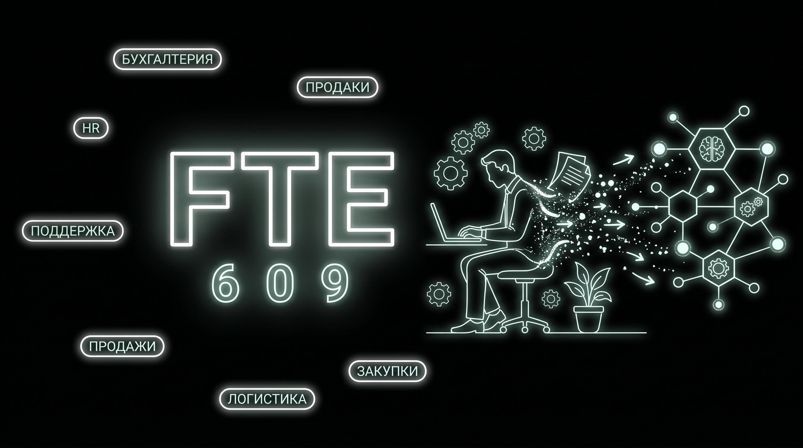
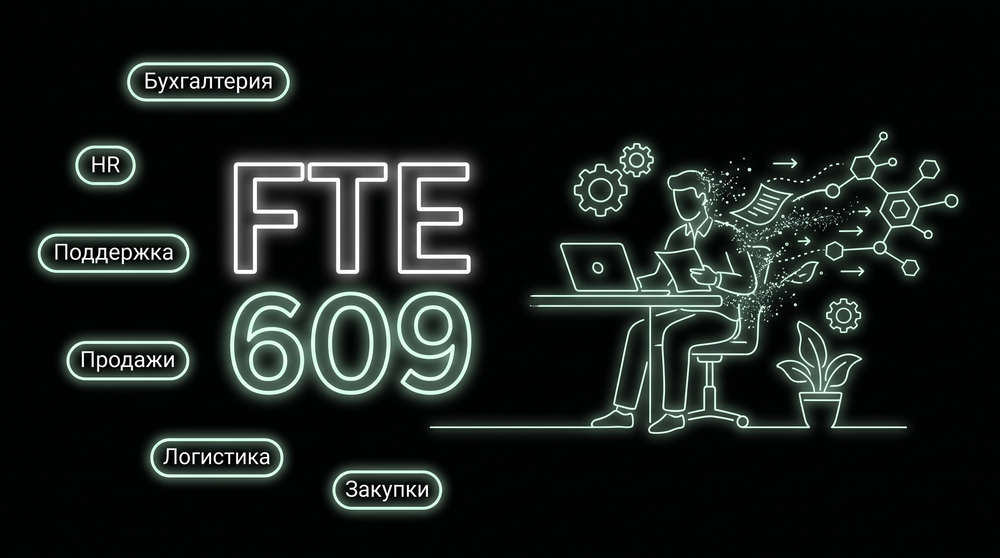

FTE / 609 — 10 вариантов (NanoBanana Pro)
Концепт исходного fte-center. v1–v5 — с опорой на исходник · v6–v10 — без опоры (свободнее). Назови номер(а), что берём.

v1с опорой

v2с опорой · полный набор плашек

v3с опорой

v4с опорой

v5с опорой
v6без опоры

v7без опоры · чистая фигура

v8без опоры · самый чистый

v9без опоры

v10без опоры